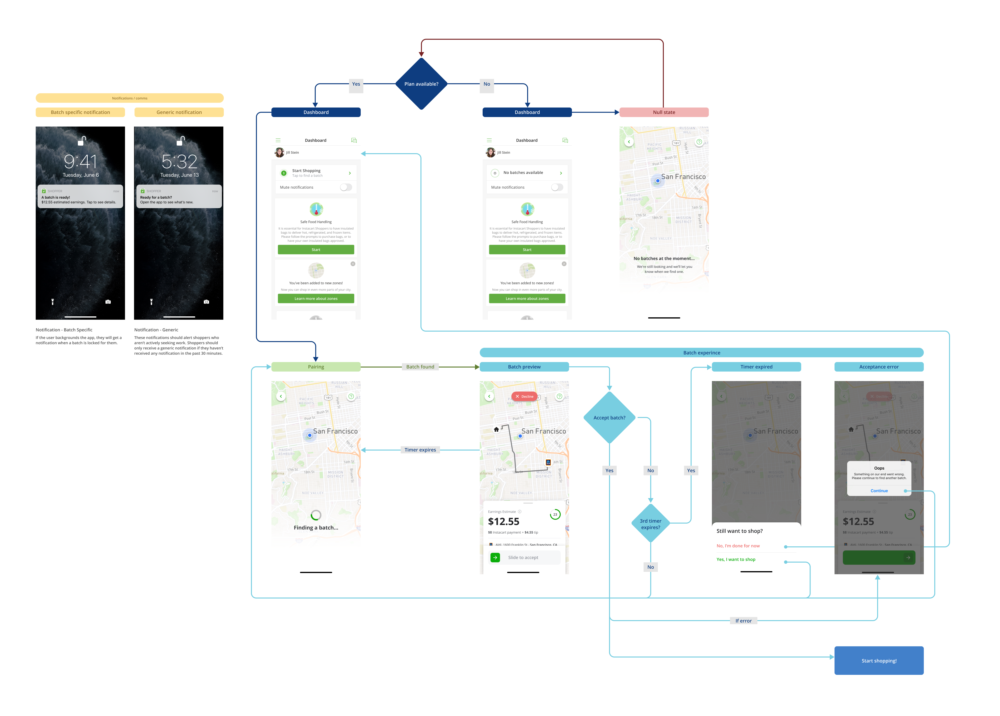

I joined Instacart in 2019 and worked on two different teams during my time there. My work involved everything from rethinking the model for how Shoppers accept work, to implementing our new design system, to prototyping new products while improving existing features.
Instacart
Senior Product Designer
2019–2021
Single Batch Evaluation
The first project I worked on was a redesign of how Shoppers take work. Up until that point Shoppers accepted a batch (an order from a customer) by tapping an ambiguous entry point on the Instacart Shopper app’s Dashboard where they would be shown available batches in their area sorted by different information, including price and distance.
The problem was twofold: first, multiple Shoppers trying to take the same batch (usually the one with the highest payout), fueled competition to accept them as fast as possible before they were snatched by another Shopper. Most times users who tried to accept a batch would be shown an error because another Shopper had beaten them to it.
Second, once a batch was accepted, the winning Shopper would sometimes cancel it (a cumbersome process that involved calling support) for reasons other than payout (too far, too large for their vehicle, etc). This was because they didn’t have adequate time to review it before accepting. Because of this we saw large increases in support calls to unassign these unwanted batches.

We were constrained in how much we could push the experience based on the architecture of the existing feature (we couldn’t re-architect any of the backend) and an aggressive timeline. Also, this was to lead to a large-scale, nationwide test that would prove if this model could work for the business. Working closely with the PM and EM to understand the nuances of how the existing backend worked, I pushed back and fought for a user experience that would solve the problems originally laid out.
After testing different acceptance models, we homed in on an experience in which other gig-economy apps already use. With this, Shoppers are shown one batch and given the option to accept or decline with a 30 second timer. During this time they are the only one to see the batch which solves the competition problem. This model also gives them adequate time to decide based on other important factors such as distance and the size of the order.
When it launched in a nationwide test, we saw a decrease in support tickets and late batches, along with a more positive experience for Shoppers in high-supply areas.

Safety Trainings
Prop 22 was a California ballot measure in the 2020 election cycle and the work we did to support it was a major initiative that affected our roadmap and workflow. If the measure passed, it would allow gig-based companies to keep classifying their workers as independent contractors. It also would grant them extra protections, including mandated safety and sexual misconduct training.
We expected these safety trainings to reduce incidents on the platform (reduce cost), and have positive PR (improved perception). Because of this we decided that this feature would launch for all users instead of just the California market.
As lead designer, I was in charge of the high-level experience, such as how it would fit into the app, how users would access it and how they would re-enter it. Other team members focused on crafting the videos and content that would live in the experience. We did this all in a two week timeline since we were under pressure to release shortly after election day.
Because of the tight timeline, we did our thinking in the box–how could we release a quality feature without building something completely from scratch? Thankfully, we had similar experiences in the app which gave folks information in multiple step-by-step flows that were connected by a single hub. This experience served as the framework that we repurposed for the mandatory safety training education.
We successfully launched this feature within the planned timeline to become compliant with Prop 22. In post-launch user tests we saw positive reactions and clear understanding of what they were being asked to do and why.
Design System Migration
In 2019 a new team formed within Instacart to create an end-to-end design system that would encompass both apps and the website. The system was adopted for use on the Fulfillment team with the 2020 Shopper app redesign.
Every team was tasked with migrating their teams’ screens and a cross-functional team was established to lead and supervise this effort. I volunteered to lead design and act as a point of contact for this migration–along with redesigning my teams’ flows. The challenge consisted of working with cross-functional partners to set timelines, create test plans, supervise progress on designs, work with individual teams and anything else that factored into implementing the design system at scale.

As work progressed, I interfaced with copywriters, engineers and other designers to address updates and changes to screens that would improve the experience without adding functionality. I also created a tracking component in Figma so engineers would know at a glance what progress was made and what step of the process each screen was in.
As a result of this effort, we were successful in implementing the design system across the app by our target of 2020. This paved the way for a broader Shopper app redesign in early 2021.